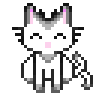
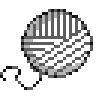
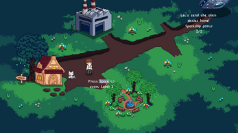
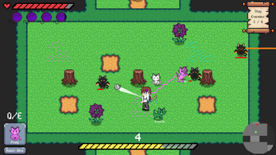

It's a universal truth: cats go absolutely crazy for a ball of yarn. In this unconventional roguelike, you turn that obsession into your greatest weapon. Take command of an army of adorable fluffballs by guiding them with the one thing they cannot resist. Your mission? Defeat the invasion of their nefarious evil alien doppelgangers!
Explore dangerous zones, outmaneuver the enemy, and scramble to collect all the missing spaceship parts. It's time to rebuild the spaceship and banish these alien impostors back to the stars where they belong.




This game was created at Lodz University of Technology as part of the "Fundamentals of Computer Games" course. Help us shape the future of the game! We'd love to hear your thoughts and suggestions in the comments.
My part of this project was mostly programming key features. You can check out game and rest of our team members work on link below